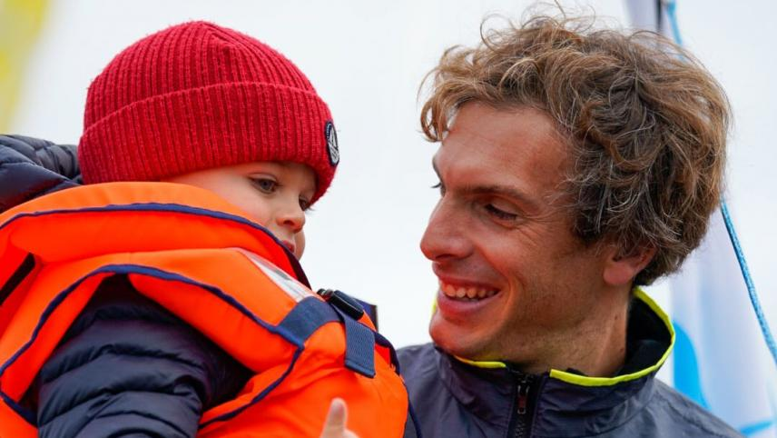

Embarquez sur les
Ondes du Ponton
La webradio des gens de mer. Émissions nautiques, reportages & interviews depuis les pontons du monde entier — bilingue FR/EN.

Charlie Dalin
1984 – 2026 · Vainqueur du Vendée Globe 2024-2025 · Marin de l'année 2025
Le 14 janvier 2025, Charlie Dalin franchissait la ligne des Sables-d'Olonne à bord de MACIF Santé Prévoyance, pulvérisant le record du Vendée Globe de neuf jours. Ce que le monde de la voile ignorait encore : il prenait chaque matin, depuis le départ, un comprimé d'immunothérapie — diagnostiqué d'un cancer en 2023, il avait gardé le secret et choisi de prendre la mer quand même.
« Si d'autres sportifs y arrivent, pourquoi pas moi ? » — Sacré Marin de l'année 2025 à l'unanimité, il s'est éteint à Quimper, à 42 ans. La mer et ses gens lui doivent une immense reconnaissance.
Radio Ponton
Webradio des gens de mer — 24h/24, 7j/7
Journal de Bord
Nos émissions quotidiennes pour naviguer entre jazz, folk et récits maritimes.
Le Comptoir
du Ponton
Portez les couleurs de votre radio préférée. T-shirts, tote bags et affiches de collection avec l'âme du marin.
- check_circle T-shirts en coton biologique
- check_circle Affiches de collection numérotées
- check_circle Impression écoresponsable via Spreadshop
Collection
Radio Ponton
Propulsé par Spreadshop
Rejoignez l'Équipage
Suivez le signal sur tous nos canaux.
Envoyez le Signal
Témoignage, question, participation ou partenariat — nous sommes à l'écoute sur toutes les fréquences.
Vous avez quelque
chose à nous dire ?
- ⛵ Témoignage ou récit de navigation
- 🎙️ Participer à une émission
- 🎧 Question sur un podcast
- ⚓ Technique nautique
- 🤝 Partenariat / Sponsoring